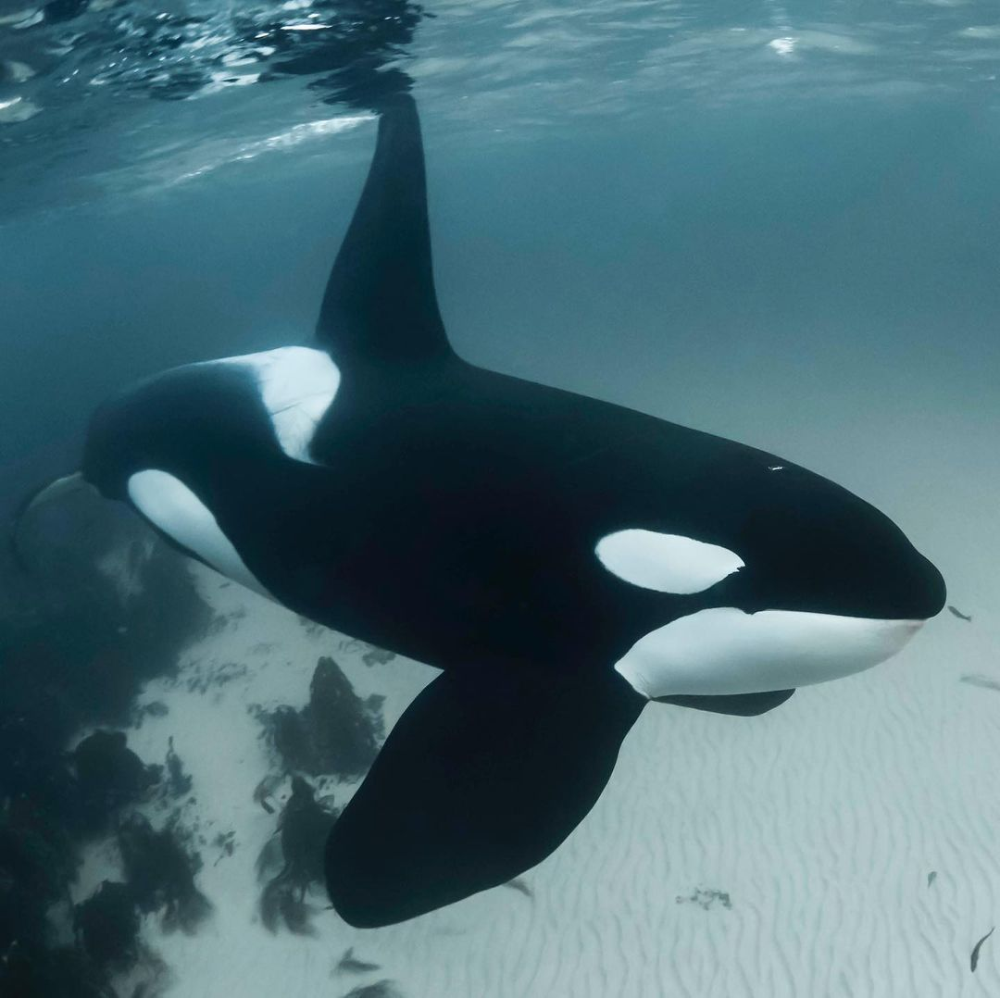
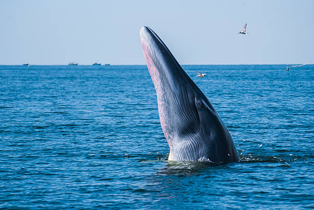
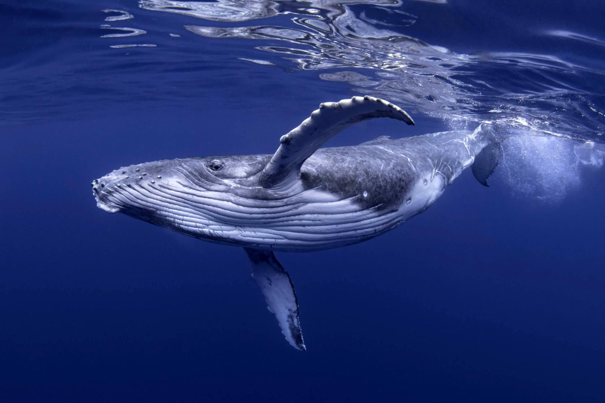

Tipos de Baleias
Alguns tipos de baleias para vocês conhecerem.
As baleias são animais incluídos na ordem Cetacea, a qual inclui mamíferos como baleias, golfinhos e botos. Os cetáceos apresentam duas subordens com organismos viventes, Mysticeti e Odontoceti, sendo a ordem Mysticeti a que reúne as baleias-verdadeiras, também conhecidas como baleias-de-barbatana.
Baleia-Azul

A baleia azul é considerada o maior animal existente na terra, podendo chegar a 27 metros de comprimento pesar até 160 toneladas. Alimenta-se basicamente de Krill, uma espécie de minúsculos camarões que vivem em bando e nadam próximo a superfície das águas. Uma baleia azul adulta pode comer até duas toneladas de krill por dia. A baleia azul foi muito caçada entre o final do século 19 e o início do século 20, principalmente pelo seu tamanho e qualidade. Hoje faz parte da lista dos animais ameaçados de extinção, sendo apenas algumas centenas nos oceanos.
- DISTRIBUIÇÃO:
Ocorre em todos os oceanos do planeta, tanto em áreas tropicais quanto temperadas e polares. - HABITAT:
Elas são encontradas em todos os oceanos do mundo, mas geralmente preferem águas frias e profundas. - ALIMENTAÇÃO
Quase exclusivamente de krill. - CLASE:
Ordem Cetacea, Família Balaenopteridae.
Curiosidades
Baleia-Cachalote

Cachalote ou cacharréu é a maior das baleias dentadas e o maior predador com dentes. É o único membro vivo do gênero Physeter e uma das três espécies existentes na superfamília Physeteroidea, juntamente com o cachalote-pigmeu e o cachalote-anão do Kogia.
- DISTRIBUIÇÃO:
Ocorre em todos os oceanos. - HABITAT:
Elas podem ser encontradas em áreas desde os polos até o equador, em todos os oceanos e no Mar Mediterrâneo. - ALIMENTAÇÃO
A fonte principal de alimento dos cachalotes são as lulas gigantes. - CLASSIFIACAÇÃO:
Ordem Cetacea, Família odontocetos (Odontoceti).
Curiosidades
- O comprimento dos machos varia de 15 a 20 m, e o das fêmeas, de 12 a 14m.
- maiores indivíduos machos chegam a pesar 80 toneladas.
- Elas vivem entorno de 70 anos.
- No famoso romance de Herman Melville, Moby Dick é um monstruoso cachalote branco caçado pelo vingativo Capitão Ahab, que perdeu a perna para a baleia dentada.
Baleia-Orca
A Orca é o membro da família dos golfinhos de maior porte e é um superpredador versátil, que inclui na sua dieta presas como peixes, moluscos, aves, tartarugas, focas, tubarões e animais de tamanho maior quando caçam em grupo, como por exemplo baleias.
- DISTRIBUIÇÃO:
Um dos locais mais frequentados pelas orcas são as águas da Antártida. - HABITAT:
Elas vivem em águas profundas, porém também são encontradas na superfície e em áreas costeiras com frequência. Um dos locais mais frequentados pelas orcas são as águas da Antártida. Também são encontradas na zona nordeste da bacia do Pacífico, especialmente na costa da Islândia e da costa norte da Noruega. - ALIMENTAÇÃO
Alimentam-se de peixes, lulas, focas, golfinhos e toninhas; pingüins, tartarugas-marinhas, e grandes baleias. - CLASSIFIACAÇÃO:
classe Mammalia, ordem Cetácea e a família Delphinidade.
Curiosidades
- Cientificamente, a orca não é uma baleia, mas sim um golfinho. Porém, não é errado citar como "baleia orca", já que golfinhos e baleias pertencem a mesma ordem (Cetácea). A principal diferença entre as baleias e as orcas estaria no esqueleto e na boca. As orcas possuem dentes, assim como os golfinhos.
- Também é conhecida como "baleia assassina", entretanto, acidentes com humanos foram registrados somente em cativeiro. Essa fama é decorrente, especialmente por conta de filmes que destacam a orca atacando outros animais.
- É um dos mamíferos mais inteligentes do mundo. Com um cérebro três vezes maior do que o humano, essa espécie é capaz de aprendizado, comunicação complexa e até mesmo estratégias de caça em grupo.
- Elas vivem entre 50 e 80 anos
- No litoral brasileiro, as orcas têm sido vistas com mais frequência, com relatos desde 1993. Registros apontam ocorrências de orcas no litoral do Rio Grande do Sul, Santa Catarina, São Paulo até a Paraíba.
- De acordo com a National Geographic, elas pesam até 6 toneladas e crescem até 9 metros de comprimento — a maior já encontrada possuía 9,8 metros.
- Tem um caso muito conhecido sobre a morte de um treinadora por uma orca, que trouxe mais fama para seu apelido "Baleia Assassina". A orca vivia em cativeiro no parque Sea World em pessimas condições, o que acabou ocasionando na morte de sua trenadora de forma brutal. Três anos após o escândalo, foi lançando um documentário intitulado Blackfish, que relata todos os abusos sofridos pelos grandes mamíferos, que viviam em péssimas condições.
- As orcas em cativeiro tornam-se animais estressados e violentos.
Baleia-Beluga

A baleia-branca, beluga ou beluca é uma espécie de cetáceo odontoceti que habita a região ártica e subártica. Assim como outros representantes deste grupo, estes animais possuem apenas um orifício respiratório. As belugas não têm barbatana dorsal, daí o nome “golfinho sem barbatana”.
- DISTRIBUIÇÃO:
Maior parte das belugas habitam o Ártico e os mares e costas adjacentes da América do Norte, Rússia e Gronelândia. - HABITAT:
Elas são encontradas no oceanos ártico e subártico. - ALIMENTAÇÃO
Eles fazem refeições de caracóis, salmão, pequenos peixes, caranguejos, camarão, amêijoa, polvos, lulas, mexilhões, vermes da areia, bacalhau e linguado. - CLASSIFIACAÇÃO:
Ordem Cetacea, Subordem Odontoceti, Família Monodontidae
Curiosidades
- As belugas às vezes são chamadas de “cabeças de melão”, devido à estrutura bulbosa que ocupa sua testa. Acredita-se que o órgão ajude na ecolocalização. 24. As vértebras no pescoço de uma beluga não são unidas, dando-lhe a capacidade incomum de virar a cabeça para cima, para baixo e para os lados.
- Apesar de possuir dentes, elas não mastigam seus alimentos; em vez disso, engolem suas presas inteiras.
- Elas não nadam muito rápido, viajando a uma velocidade média de 3 a 9 km/h e capazes de rajadas curtas de velocidade de até 22 km/h.
- Muitas vezes chamadas de "Canárias do Mar", elas são conhecidas por um vocabulário complexo de vocalizações, que usam para se comunicar com outros animais.
- Sua audição é altamente desenvolvida e possui ecolocalização, que a permite movimentar-se e encontrar aberturas em blocos de gelo.
- Elas conseguem nadar para trás.
- Elas possuem rostos extremamente expressivos e parecem sorrir algumas vezes.
- Elas são capazes de imitar a voz humana.
Baleia-Jubarte
A jubarte ou baleia-jubarte, também conhecida como baleia-corcunda, baleia-cantora, baleia-corcova, baleia-de-corcova, baleia-de-bossas, baleia-preta ou baleia-xibarte é um mamífero marinho presente na maioria dos oceanos. Ela é da ordem dos cetartiodáctilos, subordem dos cetáceos e infraordem dos misticetos
- DISTRIBUIÇÃO:
As baleias-jubarte são encontradas em quase todos os mares, com áreas de alimentação próximas às regiões polares e áreas de reprodução ao longo das costas tropicais dos continentes ou no entorno de ilhas como os arquipélagos do Hawai'i, Tonga e Polinésia Francesa. - HABITAT:
Ocorre em todos os oceanos. - ALIMENTAÇÃO
Os principais alimentos da baleia jubarte são pequenos peixes, como sardinhas e anchovas, e um tipo de crustáceo chamado krill (Euphasia superba), que se assemelha a camarões. - CLASSIFIACAÇÃO:
Ordem do Cetartiodactyla e à Infraordem dos Mysticeti.
Curiosidades
- A jubarte é um “parente” genético dos hipopótamos. Ambas as espécies descendem de um carnívoro terrestre que viveu há 60 milhões de anos na América do Norte, Europa e Ásia.
- Logo depois que o filhote nasce, a mãe se apressa para apoiar a cabeça dele fora d’água, para que possa respirar.
- As baleias jubarte e franca são poliândricas, o que significa que vários machos cortejam a fêmea. A fêmea pode acasalar com vários machos sucessivamente, sem agressividades ou ciúmes, e irá engravidar provavelmente do último parceiro.
- É uma das espécies mais numerosas que frequentam a costa brasileira.
- Há teorias que dizem que a jubarte se orienta por pontos geográficos ou pela sucessão de dias e noites durante as migrações.
- Elas se comunicam por meio de um canto tão complexo quanto uma sinfonia. A “música” tem frases completas que se repetem, e é renovada a cada estação.
Baleia-Franca

Balenídeos é uma família de cetáceos que contem dois gêneros, Balaena e Eubalaena. Distinguem-se dos outros grupos de baleias por suas cabeças grandes com a boca em forma de arco e o corpo predominantemente negro e sem sulcos ventrais.
- DISTRIBUIÇÃO:
Na América do Sul a principal concentração reprodutiva ocorre nas águas costeiras da Península Valdés, Argentina, com uma pequena população encontrada no sul do Brasil. - HABITAT:
costuma viver nas regiões cirumpolar do Hemisfério Sul - ALIMENTAÇÃO
A espécie é seletiva, buscando principalmente pequenos copépodos (Calanus, Microcalanus, Pseudocalanus, Oithoma e Metridia), além do krill Euphasia superba e Munida gregaria. - CLASSIFIACAÇÃO:
Ordem Cetacea, Subordem Mysticeti, Família Balaenidae.
Curiosidades
- A baleia-franca come apenas quando está na Antártida. Durante o período de reprodução na costa brasileira, as mamães utilizam suas reservas de energia para sobreviver e amamentar os filhotes.
- O borrifo de uma baleia-franca, em formato de V, é bem característico. Esse fenômeno resulta do ar quente que sai do pulmão e da vaporização da água que fica nos orifícios respiratórios do animal. O esguicho atinge entre 5 e 8 metros de altura. As melhores condições para visualizá-lo ocorrem nos dias frios e de pouco vento. Sendo assim, fica a dica: visite a Praia do Rosa no inverno e aumente suas chances de admirar o espetáculo.
- Via de regra, a vida fértil da baleia-franca fêmea vai dos 15 aos 60 anos de idade. Porém, isso não significa que ela consiga multiplicar a prole com muita rapidez. A gestação de um filhote leva 12 meses. Além disso, a genitora só consegue ficar grávida a cada três anos.
- Em segundo lugar, conheça a baleia-franca-do-atlântico-norte (E. glacialis) que também sofre com o risco de extinção. A caça ilegal ocorre porque os indivíduos que morrem flutuam algo que é incomum com as outras espécies e que facilita o trabalho de baleeiros.
Baleia-Bryde
Baleia-de-bryde ou o complexo de baleia de Bryde, é o nome comum dado a duas espécies de baleias, a Balaenoptera brydei e a Balaenoptera edeni, da família dos balenopterídeos. O "complexo" significa que o número e a classificação permanecem obscuros devido à falta de informações e pesquisas definitivas.
- DISTRIBUIÇÃO:
Águas tropicais e subtropicais de todo o mundo. - HABITAT:
Os indivíduos podem ser vistos em águas temperadas e tropicais quentes, bem como estão nos Oceanos Índico, Pacífico e Atlântico. - ALIMENTAÇÃO
A dieta de uma Baleia-de-bryde inclui plâncton, krill, marisco e peixe. - CLASSIFIACAÇÃO:Cetartiodactyla, Cetacea, Mysticeti.
Curiosidades
- O nome vulgar da baleia de bryde está relacionado a duas espécies de baleias. A primeira seria a Balaenoptera brydei, seguida da Balaenoptera edeni, que são membros da família dos balenopterídeos.
- Elas sofrem risco de extinção
- A temperatura média da água para eles viverem deve ser entre 16 e 22 ° C e um local em que a espécie não habita seria a parte central do Mar do Norte do Japão.
Baleia-Fin
A baleia-comum, também chamada de baleia-fin e rorqual-comum, é um mamífero marinho que pertence à família dos balenopterídeos, da ordem dos cetáceos. É o segundo maior animal existente, depois da baleia-azul, podendo atingir um comprimento de até 25,9 metros, embora haja relatos de espécimes com 27,3 m.
- DISTRIBUIÇÃO:
Todos os oceanos do mundo. - HABITAT:
É possível encontrar a baleia fin tanto em regiões polares quanto em regiões tropicais. - ALIMENTAÇÃO
Alimenta-se de krill, alguns invertebrados, pequenos peixes e ocasionalmente de lulas. - CLASSIFIACAÇÃO:
Ordem Cetartiodactyla, Família Balaenopteridae
Curiosidades
- É a espécie que vive por mais tempo. Alguns indivíduos chegam até os 100 anos de idade.
- A baleia-fin é a segunda maior baleia, medindo entre 21 e 26 metros e pode pesar de 45 até 80 toneladas.
- Seu canto (um ‘sonar’ para orientação) é o mais forte e pode ser ouvido a uma distância de até 850 km.
- A partir da década de 20, uma queda drástica na abundância de Baleias Fin foi registrada, devido à modernização dos aparatos de pesca que permitiram a captura desta espécie em escala industrial. O óleo, gordura e placas de queratina (ou barbatanas bucais) das Baleias Fin são os principais recursos que motivam sua caça, atualmente considerada ilegal pela Comissão Baleeira Internacional. Entretanto, além da caça ilegal, outros fatores ameaçam estas baleias como a redução do krill devido às mudanças climáticas globais, colisões com navios, poluição por metais pesados e perda de habitat. Atualmente, esta espécie encontra-se classificada como ameaçada de extinção pela IUCN, e cada vez menos indivíduos alcançam a maturação sexual.
- São animais que costumam ser avistado em grupos de até 15 indivíduos.
- Quando a Baleia azul começou a entrar em extinção, a Baleia fin começou a ser mais caçada.
- É conhecida também como Baleia-Comum e Rorqual-Comum